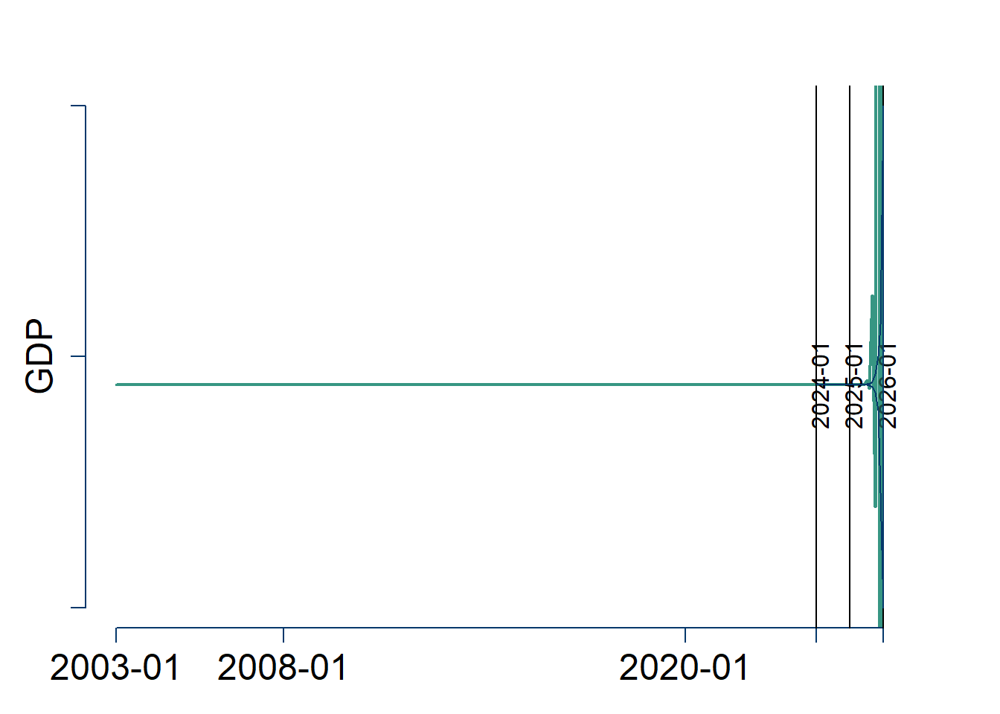

Bayesian VAR Forecast of Economic Activity using Macroeconomic and Financial Variables
Note: Not completely finished, as extension is not working optimally
Research question
Past financial crises such as in 2008 have shown the severe impact that financial conditions can have on the real economy with crashes followed by increasing unemployment and decreased economic activity. This research project’s aim to analyze the forecasting performance of macroeconomic variables by including financial variables to forecast GDP.
Thus the research question can be stated as: Will including financial variables improve the forecasting performance of economic activity?
Motivation
Traditional macroeconomic modelling often exclude financial markets, as the effects from the financial nominal variables on real variables are deemed insignificant per the classical dichotomy in macroeconomics. However, as earlier studies have shown and the descriptive analysis following this will illustrate, changes in the financial sector can spill over to economic activity. Therefore, it could help explaining the real economy, which could translate to improved forecasting performance.
As both monetary and fiscal policy is not only based on current economic conditions but also expectations regarding the future, it is essential to be able to generate accurate predictions of economic activity and inflation in the future.
Data and its properties
My choice of variables is somewhat inspired by papers like Boeckx, Dossche, and Peersman (2014), who perform SVAR analyses of the ECB’s monetary policy, however, I am instead interested in examining the forecasting ability of macroeconomic variables combined with financial for the euro area. As forecasts are often short-term forecasts of the immediate future, data frequency has to be high, hence all data used in this analysis is monthly.
The economic variables used in this analysis are then:
To model the economic activity in the euro area, I use the Industrial Production as proxy for the movements in the Gross Domestic Product (GDP). If I instead opted to use GDP as a variable directly, I would have been required to apply temporal disaggregation, as GDP is tracked quarterly.
The price level in the euro area is included as the Harmonized Index of Consumer Prices (HICP), which measures the price level and inflation across the euro area. Including the price level is important, as it is a major concern for policy makers and it will affect the economic activity and be affected by financial conditions. The base year of the HICP is 2015.
Additionally, I include unemployment in the euro area, as it is both an indicator of economic activity and current expectations to the future. Hence, unemployment serves as an important variable to include when modelling the economy.
I chose to include financial stress, which is measured by composite indicator variable for systemic stress (CISS) in the euro area, as financial conditions and markets highly affects the economic activity, inflation and unemployment. CISS summarizes the financial stress across money, bond, equity, and foreign exchange markets, and financial intermediaries in the euro area constructed by Hollo, Kremer, and Lo Duca (2012). When assessing the influence from financial variables in the forecasts, I remove this variable.
I include the M2 money supply in the euro area to include the most liquid part of the overall money supply and short term deposits, as it illustrates the available economic resources in the economy.
The key ECB interest rate the Main Refinancing Operations (MRO) is included as well, which state the interest that banks have to pay, if they want to borrow money for a week.
Finally, I include private consumption to measure how much money households are spending, which illustrate the economic activity.
The used time series are collected from the ECB’s data warehouse with the chosen time period 01.01.2003 to 2023.12.01. I use the package ecb to collect the data.
Descriptive analysis
The five variables are visualized in Figure 1, where I have taken the logarithm to all variables except from the indicator variable CISS. Inflation and M2 money supply seem to follow an upwards trend, while industrial production, financial stress and unemployment all seem to follow each other, such that industrial production is negative correlated with unemployment and financial stress. Intuitively it makes sense that economic activity decreases with increasing unemployment or stress and uncertainty in the financial sector.
Autocorrelation in the variables
Additionally, I check for autocorrelation in the time series in Figure 2 and Figure 3, where there is clearly a high degree of memory in the variables.

Unit root tests
To test for the timeseries being stationary, I apply an Augmented Dickey Fuller (ADF) test, by using the adf(), which tests for the presence an unit root in the time series with the chosen lag of 12 periods, since the data is monthly. Table 1 reports the test statistics for the ADF tests:
| Variable | ADF_Statistic | P_Value | lags |
|---|---|---|---|
| IP | -2.887 | 0.202 | 12 |
| HICP | -5.537 | 0.010 | 12 |
| CISS | -2.260 | 0.466 | 12 |
| UN | -2.978 | 0.164 | 12 |
| M2 | -1.370 | 0.841 | 12 |
| MRO | -3.035 | 0.140 | 12 |
| Consumption | 0.191 | 0.990 | 12 |
Only for inflation can I reject the possibility of an unit root being present at the 5 pct. confidence interval.
The model
To analyze the macroeconomic and financial variables and run forecasts, a vector autoregression (VAR) model can be applied, which allows for the multivariate framework of several timeseries. A general VAR model with \(\rho\) lags for \(t=1,...,T\) can be stated as:
\[\begin{gather} y_{t} =\mu_{0}+A_{1}y_{t-1}+...+A_{\rho}y_{t-\rho}+\epsilon_{t} \epsilon_{t}|Y_{T-1} \sim iid\left(0_{N},\Sigma\right) \end{gather}\]
Where \(y_{t}=N\times1\) is a vector of observations at time \(t\), \(\mu_{0}=N\times1\) is a vector of constant terms, \(A_{i}=N\times N\) is a vector of the autoregressive slope parameters, \(\epsilon_{t}=N\times1\) is a vector of error terms, \(Y_{t-1}\) is the information set and \(\Sigma=N\times N\) is the covariance matrix of the error term.
Matrix version of model
In matrix form, I have the model as with \(N=7\) variables:
\[\begin{gather} Y =XA+E \end{gather}\]
\[\begin{gather} E|X \sim\mathcal{MN}_{T\times N}\left(0_{T\times N},\Sigma,I_{T}\right) \end{gather}\]
Where \(Y=T\times7\) matrix, \(X=T\times\left(1+\left(7\times p\right)\right)\) matrix, \(A=\left(1+\left(7\times p\right)\right)\times7\) matrix that has the relationships between the used variables and \(E=T\times7\) matrix of error terms. \(p=12\) which is the amount of lags for monthly data and in total I have 252 observations of monthly data.
Baseline model:
Then the likelihood function is given by:
\[\begin{align} Y|X,A,\Sigma&\sim\mathcal{MN}_{T\times N}\left(XA,\Sigma,I_{T}\right)\\L\left(A,\Sigma|Y,X\right)&\propto\det\left(\Sigma\right)^{-\frac{T}{2}}\exp\left(-\frac{1}{2}tr\left[\Sigma^{-1}\left(Y-XA\right)'\left(Y-XA\right)\right]\right) \end{align}\]
The natural conjugate priors for A and are then assumed to follow matrix-variate normal and inverse Wishart distributions:
\[\begin{align} p\left(A,\Sigma\right)&=p\left(A|\Sigma\right)p\left(\Sigma\right)\\A|\Sigma&\sim\mathcal{MN}_{T\times N}\left(\underline{A},\Sigma,\underline{V}\right)\\\Sigma&\sim IW_{N}\left(\underline{S},\underline{\nu}\right) \end{align}\]
Minnesota prior
Macroeconomic variables are often assumed to be unit-root non stationary following a simple random walk \(AR(1)\) process:
\[\begin{align} y_t = y_{t-1}+\epsilon_{t} \end{align}\]
Thus, the baseline model follow the Minnesota prior as introduced by Doan, Litterman, and Sims (1984) set as:
\[\begin{align} \underline{A}&=\left[0_{N\times1},I_{N},0_{N\times\left(p-1\right)N}\right]'\\\underline{V}&=diag\left(\left[\kappa_{2},\kappa_{1}\left(p^{-2}\otimes1_{N}^{'}\right)\right]\right)\\\underline{\nu}&=N+1 \end{align}\]
Where the mean of the first lag is set to \(1\) with the remaining lags and constant term set to \(0\) and the column-specific prior shrinkage of \(A\) follow some shrinkage level.
Then the posterior distribution will be:
\[\begin{align} p\left(A,\Sigma|Y,X\right)&\propto\det\left(\Sigma\right)^{-\frac{T}{2}}\\&\times\exp\left(-\frac{1}{2}tr\left[\Sigma^{-1}\left(A-\hat{A}\right)'X'X\left(A-\hat{A}\right)\right]\right)\\&\times\exp\left(-\frac{1}{2}tr\left[\Sigma^{-1}\left(Y-X\hat{A}\right)'\left(Y-X\hat{A}\right)\right]\right)\\&\times\det\left(\Sigma\right)^{-\frac{N+K+\underline{\nu}+1}{2}}\\&\times\exp\left(-\frac{1}{2}tr\left[\Sigma^{-1}\left(A-\underline{A}\right)'\underline{V}^{-1}\left(A-\underline{A}\right)\right]\right)\\&\times\exp\left(-\frac{1}{2}tr\left[\Sigma^{-1}\underline{S}\right]\right) \end{align}\]
Then by combining the terms yields the posterior distributions for \(A\) and \(\Sigma\) as:
\[\begin{align} p\left(A,\Sigma|Y,X\right)&\propto\det\left(\Sigma\right)^{-\frac{T+N+K+\underline{\nu}+1}{2}}\\&\times\exp\left(-\frac{1}{2}tr\left[\Sigma^{-1}\left[\left(A-\hat{A}\right)'X'X\left(A-\hat{A}\right)+\left(Y-X\hat{A}\right)'\left(Y-X\hat{A}\right)\right.\right.\right.\\&+\left.\left.\left.\left(A-\underline{A}\right)'\underline{V}^{-1}\left(A-\underline{A}\right)+\underline{S}\right)\right]\right] \end{align}\]
Writing all the squares out yields the full conditional as:
\[\begin{align} p\left(A,\Sigma|Y,X\right)&=p\left(A|Y,X,\Sigma\right)p\left(\Sigma|Y,X\right)\\p\left(A|Y,X,\Sigma\right)&=\mathcal{MN}_{T\times N}\left(\overline{A},\Sigma,\overline{V}\right)\\p\left(\Sigma|Y,X\right)&=IW_{N}\left(\overline{S},\overline{\nu}\right)\\\overline{V}&=\left(X'X+V^{-1}\right)^{-1}\\\overline{A}&=\overline{V}\left(X'Y+\underline{V}^{-1}\underline{A}\right)\\\overline{\nu}&=T+\underline{\nu}\\\overline{S}&=\underline{S}+Y'Y+\underline{A}'\underline{V}^{-1}\underline{A}-\overline{A}'\overline{V}^{-1}\overline{A} \end{align}\]
The baseline model can be estimated by:
### Baseline model BVAR estimation:
# Setting specifications
N = ncol(Data[ , -1])
p = 12
K = 1+N*p
S = 10000
set.seed(1)
# Initializing X and Y matrices
y = ts(Data[ , -1], start=c(2003,1), frequency=12)
Y = ts(y[13:nrow(y),], start=c(2004,1), frequency=12)
X = matrix(1,nrow(Y),1)
for (i in 1:p){
X = cbind(X,y[13:nrow(y)-i,])
}
# Maximum Likelihood Estimator
A.hat = solve(t(X)%*%X)%*%t(X)%*%Y
Sigma.hat = t(Y-X%*%A.hat)%*%(Y-X%*%A.hat)/T
# Setting Minnesota Prior
kappa.1 = 0.02^2
kappa.2 = 100
A.prior = matrix(0,nrow(A.hat),ncol(A.hat))
A.prior[2:(N+1),] = diag(N)
priors = list(
A.prior = A.prior,
V.prior = diag(c(kappa.2,kappa.1*((1:p)^(-2))%x%rep(1,N))),
S.prior = diag(diag(Sigma.hat)),
nu.prior = N+1
)
# BVAR function
BVAR = function(Y,X,priors,S){
# normal-inverse Wishart posterior parameters
V.bar.inv = t(X)%*%X + diag(1/diag(priors$V.prior))
V.bar = solve(V.bar.inv)
A.bar = V.bar%*%(t(X)%*%Y + diag(1/diag(priors$V.prior))%*%priors$A.prior)
nu.bar = nrow(Y) + priors$nu.prior
S.bar = priors$S.prior + t(Y)%*%Y + t(priors$A.prior)%*%diag(1/diag(priors$V.prior))%*%priors$A.prior - t(A.bar)%*%V.bar.inv%*%A.bar
S.bar.inv = solve(S.bar)
#posterior draws
Sigma.posterior = rWishart(sum(S), df=nu.bar, Sigma=S.bar.inv)
Sigma.posterior = apply(Sigma.posterior,3,solve)
Sigma.posterior = array(Sigma.posterior,c(N,N,sum(S)))
A.posterior = array(rnorm(prod(c(dim(A.bar),sum(S)))),c(dim(A.bar),sum(S)))
L = t(chol(V.bar))
for (s in 1:sum(S)){
A.posterior[,,s]= A.bar + L%*%A.posterior[,,s]%*%chol(Sigma.posterior[,,s])
}
posterior = list(
Sigma.posterior = Sigma.posterior,
A.posterior = A.posterior
)
return(posterior)
}
# Applying BVAR function
posterior.draws = BVAR(Y=Y, X=X, priors=priors, S=S)
par(mfrow=c(2,2))
hist(posterior.draws$Sigma.posterior[2,1,1:sum(S)], col="#379683", xlab="Value of Sigma", ylab="Frequency", main ="Histogram of draws of Sigma")
plot.ts(posterior.draws$Sigma.posterior[2,1,1:sum(S)],col="#379683", xlab="Iteration s", ylab=NULL, main="Plot of posterior draws of sigma")
hist(posterior.draws$Sigma.posterior[1,1,1:sum(S)], col="#379683", xlab="Value of A", ylab="Frequency", main="Histogram of draws of A")
plot.ts(posterior.draws$Sigma.posterior[1,1,1:sum(S)],col="#379683", xlab="Iteration s", ylab=NULL, main="Plot of posterior draws of A")The posterior mean of the matrices are close to an identity matrix and for the constant term, it is close to a zero vector. Hence, the estimation appears robust. This is demonstrated at the end by simulation.
Extended model
The chosen extension will be analyzing the mean of \(A\). \[\begin{align} A=\left[\begin{array}{c} \mu_{0}^{'}\\ A_{1}^{'}\\ ...\\ A_{p}^{'} \end{array}\right]&\underline{A}_{M}=\left[\begin{array}{c} I_{N}\\ I_{N}\\ I_{N} \end{array}\right]&\underline{a}_{i}\sim N\left(\underline{m}_{a_{i}},\underline{s}_{a_{I}}^{2}\right) \end{align}\]
\[\begin{align} \underline{A}=\underline{a}\underline{A}_{M} \end{align}\]
\[\begin{align} \underline{A}=\left[\begin{array}{c} \underline{0}_{N}^{'}\\ \underline{a}_{1}I_{N}\\ ...\\ \underline{a}_{p}I_{N} \end{array}\right] \end{align}\]
The full conditional posterior of \(\underline{a}\) will then be:
\[\begin{align} \underline{a}_{i}|Y,X,A,\Sigma&\propto L\left(A,\Sigma,Y,X\right)p\left(A|\Sigma,\underline{a}_{i}\right)p\left(\Sigma\right)p\left(\underline{a}_{i}\right)\\&\propto p\left(\underline{\alpha}_{i}\right)\left[\prod_{n=1}^{N}p\left(A_{1,nn}|\Sigma,\underline{a}_{i},\underline{V}\right)\right] \end{align}\]
with:
\[\begin{align} A_{1,NN}|\Sigma,\underline{a}_{i},\underline{V}\sim N\left(\underline{a}_{i},\Sigma_{NN},\underline{V}_{\left(N+1\right)\left(N+1\right)}\right) \end{align}\]
Thus deriving the full conditional posterior:
\[\begin{align} &\propto\exp\left(-\frac{1}{2}\frac{\left(\underline{a}_{i}-\underline{m}_{a_{i}}\right)^{2}}{\underline{s}_{a_{i}}^{2}}\right)\exp\left(-\frac{\left(\underline{a}_{i}-A_{1,11}\right)^{2}}{\Sigma_{11}\underline{V}_{22}}\right)...\exp\left(-\frac{\left(\underline{a}_{i}-A_{1,NN}\right)^{2}}{\Sigma_{NN}\underline{V}_{\left(n+1\right)\left(n+1\right)}}\right)\\&=\exp\left(-\frac{1}{2}\frac{\left(\underline{a}_{i}-\underline{m}_{a_{i}}\right)^{2}}{\underline{s}_{a_{i}}^{2}}+\frac{\left(\underline{a}_{i}-A_{1,11}\right)^{2}}{\Sigma_{11}\underline{V}_{22}}+...+\frac{\left(\underline{a}_{i}-A_{1,NN}\right)^{2}}{\Sigma_{NN}\underline{V}_{\left(N+1\right)\left(N+1\right)}}\right)\\&=\exp\left(-\frac{1}{2}\left(\underline{a}_{i}^{2}\left(\frac{1}{\underline{s}_{a_{i}}^{2}}+\frac{1}{\Sigma_{11}\underline{V}_{22}}+...+\frac{1}{\Sigma_{NN}\underline{V}_{\left(N+1\right)\left(N+1\right)}}\right)-2a\left(\frac{A_{1,NN}}{\underline{s}_{a_{i}}^{2}}+\frac{A_{1,NN}}{\Sigma_{11}\underline{V}_{22}}+...+\frac{A_{1,NN}}{\Sigma_{nn}\underline{V}_{\left(N+1\right)\left(N+1\right)}}\right)\right)\right)\\&=\exp\left(-\frac{1}{2}\left(\frac{\left(\underline{a}_{i}-\overline{a}\right)^{2}}{\overline{s}_{a_{i}}^{2}}\right)\right) \end{align}\]
We can write it following the normal distribution:
\[\begin{align} \overline{s}_{a_{i}}^{2}&=\left(\frac{1}{\underline{s}_{a_{i}}^{2}}+\frac{1}{\Sigma_{11}\underline{V}_{22}}+...+\frac{1}{\Sigma_{NN}\underline{V}_{\left(N+1\right)\left(N+1\right)}}\right)^{-1}\\\overline{a}_{i}&=\overline{s}_{a_{i}}^{2}\left(\frac{\underline{m}_{a_{i}}}{\underline{s}_{a_{i}}^{2}}+\frac{A_{1,11}}{\Sigma_{11}\underline{V}_{22}}+...+\frac{A_{1,NN}}{\Sigma_{NN}\underline{V}_{\left(N+1\right)\left(N+1\right)}}\right) \end{align}\]
Which can possibly be estimated by:
### Extended model BVAR estimation
# Setting specifications
N = ncol(Data[ , -1])
p = 12
K = 1+N*p
S = 1000 # Using small sample as computations take extensive time
set.seed(1)
# Initializing X and Y matrices
y = ts(Data[ , -1], start=c(2003,1), frequency=12)
Y = ts(y[13:nrow(y),], start=c(2004,1), frequency=12)
X = matrix(1,nrow(Y),1)
for (i in 1:p){
X = cbind(X,y[13:nrow(y)-i,])
}
# Maximum Likelihood Estimator
A.hat = solve(t(X)%*%X)%*%t(X)%*%Y
Sigma.hat = t(Y-X%*%A.hat)%*%(Y-X%*%A.hat)/T
# Setting Minnesota Prior
kappa.1 = 0.02^2
kappa.2 = 100
A.prior = matrix(0,nrow(A.hat),ncol(A.hat))
A.prior[2:(N+1),] = diag(N)
priors = list(
A.prior = A.prior,
V.prior = diag(c(kappa.2,kappa.1*((1:p)^(-2))%x%rep(1,N))),
S.prior = diag(diag(Sigma.hat)),
nu.prior = N+1
)
m_a = 1
s2 = 0.1
a.posterior.store = numeric(S)
Sigma.posterior = rWishart(1, df=priors$nu.prior, Sigma=priors$S.prior)[,,1]
V.bar = priors$V.prior
A.posterior = priors$A.prior
# Posterior of underline a:
compute_sbar2 = function(s2, Sigma, V) {
sbar2 = 1/s2
for (i in 1:nrow(Sigma)) {
sbar2 = sbar2 + 1/(Sigma[i,i]*V[i+1,i+1])
}
return(1/sbar2)
}
compute_a_posterior = function(sbar2, Sigma,V,A){
a_posterior = m_a/sbar2
n=nrow(Sigma)
A_1 = A[2:nrow(A),]
for(i in 1:n) {
a_posterior = a_posterior + A_1[i,i]/(Sigma[i,i]*V[i+1,i+1])
}
return(sbar2*a_posterior)
}
# BVAR function
BVAR.extension = function(Y,X,priors,S){
A.posterior = array(0.1, dim = c(K,N,sum(S)))
Sigma.posterior = array(0.1,dim=c(N,N,sum(S)))
for (s in 1:sum(S)){
sbar2 = compute_sbar2(s2, Sigma.posterior[,,s],V.bar)
a_posterior = compute_a_posterior(sbar2, Sigma.posterior[,,s],V.bar, A.posterior[,,s])
a.posterior = rnorm(1, a_posterior, sqrt(sbar2))
a.posterior.store[s] = a.posterior
# normal-inverse Wishart posterior parameters
V.bar.inv = t(X)%*%X + diag(1/diag(priors$V.prior))
V.bar = solve(V.bar.inv)
A.bar = V.bar%*%(t(X)%*%Y + diag(1/diag(priors$V.prior))%*%priors$A.prior*a.posterior)
nu.bar = nrow(Y) + priors$nu.prior
S.bar = priors$S.prior + t(Y)%*%Y + t(priors$A.prior*a.posterior)%*%diag(1/diag(priors$V.prior))%*%priors$A.prior*a.posterior - t(A.bar)%*%V.bar.inv%*%A.bar
S.bar.inv = solve(S.bar)
#posterior draws
Sigma.posterior = rWishart(sum(S), df=nu.bar, Sigma=S.bar.inv)
Sigma.posterior = apply(Sigma.posterior,3,solve)
Sigma.posterior = array(Sigma.posterior,c(N,N,sum(S)))
A.posterior = array(rnorm(prod(c(dim(A.bar),sum(S)))),c(dim(A.bar),sum(S)))
L = t(chol(V.bar))
A.posterior[,,s]= A.bar + L%*%A.posterior[,,s]%*%chol(Sigma.posterior[,,s])
}
posterior = list(
Sigma.posterior = Sigma.posterior,
A.posterior = A.posterior
)
return(posterior)
}
# Applying BVAR function
posterior.draws.extension = BVAR.extension(Y=Y, X=X, priors=priors, S=S)
par(mfrow=c(2,2))
hist(posterior.draws.extension$Sigma.posterior[2,1,1:sum(S)], col="#379683", xlab="Value of Sigma", ylab="Frequency", main ="Histogram of draws of Sigma")
plot.ts(posterior.draws.extension$Sigma.posterior[2,1,1:sum(S)],col="#379683", xlab="Iteration s", ylab=NULL, main="Plot of posterior draws of sigma")
hist(posterior.draws.extension$Sigma.posterior[1,1,1:sum(S)], col="#379683", xlab="Value of A", ylab="Frequency", main="Histogram of draws of A")
plot.ts(posterior.draws.extension$Sigma.posterior[1,1,1:sum(S)],col="#379683", xlab="Iteration s", ylab=NULL, main="Plot of posterior draws of A")
However, as shown by simulation (shown at the end of the report) the model extension is not working correctly as the model is not robust and A posterior is not calculated the correct way. Therefore, any forecast based on this extension is going to be severely lacking.
AS the extension by itself is not currently working, I will not show any results from combining the extension with stochastic volatility
Bayesian VAR Stochastic Volatility
The baseline model is changed to allow for stochastic volatility, such that we specify the conditional heteroskedasticity:
\[\begin{align} Y&=XA+E\\E|X&\sim\mathcal{MN}_{T\times N}\left(0_{T\times N},\Sigma,\text{diag}\left(\sigma^{2}\right)\right)\\\sigma^{2}&=\left(\exp\left(h_{1}\right),...,\exp\left(h_{t}\right)\right) \end{align}\] Where \(h_{t}\) is the stochastic volatility process.
This gives the new likelihood function:
\[\begin{align} Y|X,A,\Sigma&\sim\mathcal{MN}_{T\times N}\left(XA,\Sigma,\text{diag}\left(\sigma^{2}\right)\right)\\L\left(A,\Sigma|Y,X\right)&\propto\det\left(\Sigma\right)^{-\frac{T}{2}}\exp\left(-\frac{1}{2}\text{tr}\left(\Sigma^{-1}\left(Y-XA\right)'\text{diag}\left(\sigma^{2}\right)\left(Y-XA\right)\right)\right) \end{align}\]
The full conditional posterior can then be derived as:
\[\begin{align} p\left(A,\Sigma|Y,X\right)&=MN\left(\overline{A},\overline{V},\overline{S},\overline{\nu}\right)\\\overline{V}&=\left(X'\text{diag}\left(\sigma^{2}\right)^{-1}X+\underline{V}^{-1}\right)^{-1}\\\overline{A}&=\overline{V}\left(X'\text{diag}\left(\sigma^{2}\right)^{-1}Y+\underline{V}^{-1}\underline{A}\right)\\\overline{S}&=\underline{V}+Y'\text{diag}\left(\sigma^{2}\right)^{-1}Y+\underline{A}'\underline{V}^{-1}\underline{A}-\overline{A}'\overline{V}^{-1}\overline{A}\\\overline{\nu}&=T+\underline{\nu} \end{align}\]
Which can be estimated by:
### Extended model BVAR estimation - Not inserted as extension will be switched
### Stochastic volatility
SVcommon.Gibbs.iteration = function(aux, priors){
# A single iteration of the Gibbs sampler for the SV component
#
# aux is a list containing:
# Y - a TxN matrix
# X - a TxK matrix
# H - a Tx1 matrix
# h0 - a scalar
# sigma.v2 - a scalar
# s - a Tx1 matrix
# A - a KxN matrix
# Sigma - an NxN matrix
# sigma2 - a Tx1 matrix
#
# priors is a list containing:
# h0.v - a positive scalar
# h0.m - a scalar
# sigmav.s - a positive scalar
# sigmav.nu - a positive scalar
# HH - a TxT matrix
T = dim(aux$Y)[1]
N = dim(aux$Y)[2]
alpha.st = c(1.92677,1.34744,0.73504,0.02266,0-0.85173,-1.97278,-3.46788,-5.55246,-8.68384,-14.65000)
sigma.st = c(0.11265,0.17788,0.26768,0.40611,0.62699,0.98583,1.57469,2.54498,4.16591,7.33342)
pi.st = c(0.00609,0.04775,0.13057,0.20674,0.22715,0.18842,0.12047,0.05591,0.01575,0.00115)
Lambda = solve(chol(aux$Sigma))
Z = rowSums( ( aux$Y - aux$X %*% aux$A ) %*% Lambda ) / sqrt(N)
Y.tilde = as.vector(log((Z + 0.0000001)^2))
Ytilde.alpha = as.matrix(Y.tilde - alpha.st[as.vector(aux$s)])
# sampling initial condition
############################################################
V.h0.bar = 1/((1 / priors$h0.v) + (1 / aux$sigma.v2))
m.h0.bar = V.h0.bar*((priors$h0.m / priors$h0.v) + (aux$H[1] / aux$sigma.v2))
h0.draw = rnorm(1, mean = m.h0.bar, sd = sqrt(V.h0.bar))
aux$h0 = h0.draw
# sampling sigma.v2
############################################################
sigma.v2.s = priors$sigmav.s + sum(c(aux$H[1] - aux$h0, diff(aux$H))^2)
sigma.v2.draw = sigma.v2.s / rchisq(1, priors$sigmav.nu + T)
aux$sigma.v2 = sigma.v2.draw
# sampling auxiliary states
############################################################
Pr.tmp = simplify2array(lapply(1:10,function(x){
dnorm(Y.tilde, mean = as.vector(aux$H + alpha.st[x]), sd = sqrt(sigma.st[x]), log = TRUE) + log(pi.st[x])
}))
Pr = t(apply(Pr.tmp, 1, function(x){exp(x - max(x)) / sum(exp(x - max(x)))}))
s.cum = t(apply(Pr, 1, cumsum))
r = matrix(rep(runif(T), 10), ncol = 10)
ss = apply(s.cum < r, 1, sum) + 1
aux$s = as.matrix(ss)
# sampling log-volatilities using functions for tridiagonal precision matrix
############################################################
Sigma.s.inv = diag(1 / sigma.st[as.vector(aux$s)])
D.inv = Sigma.s.inv + (1 / aux$sigma.v2) * priors$HH
b = as.matrix(Ytilde.alpha / sigma.st[as.vector(aux$s)] + (aux$h0/aux$sigma.v2)*diag(T)[,1])
lead.diag = diag(D.inv)
sub.diag = mgcv::sdiag(D.inv, -1)
D.chol = mgcv::trichol(ld = lead.diag, sd = sub.diag)
D.L = diag(D.chol$ld)
mgcv::sdiag(D.L,-1) = D.chol$sd
x = as.matrix(rnorm(T))
a = forwardsolve(D.L, b)
draw = backsolve(t(D.L), a + x)
aux$H = as.matrix(draw)
aux$sigma2 = as.matrix(exp(draw))
return(aux)
}
# Setting specifications
N = ncol(Data[ , -1])
p = 12
K = 1+N*p
S = 10000
h = 24
set.seed(1)
# Initializing X and Y matrices
y = ts(Data[ , -1], start=c(2003,1), frequency=12)
Y = ts(y[13:nrow(y),], start=c(2004,1), frequency=12)
T = nrow(Y)
X = matrix(1,nrow(Y),1)
for (i in 1:p){
X = cbind(X,y[13:nrow(y)-i,])
}
# Maximum Likelihood Estimator
A.hat = solve(t(X)%*%X)%*%t(X)%*%Y
Sigma.hat = t(Y-X%*%A.hat)%*%(Y-X%*%A.hat)/T
# Setting Minnesota Prior
kappa.1 = 0.02^2
kappa.2 = 100
A.prior = matrix(0,nrow(A.hat),ncol(A.hat))
A.prior[2:(N+1),] = diag(N)
H = diag(T)
sdiag(H,-1) = -1
HH = 2*diag(T)
sdiag(HH,-1) = -1
sdiag(HH,1) = -1
priors = list(
A.prior = A.prior,
V.prior = diag(c(kappa.2,kappa.1*((1:p)^(-2))%x%rep(1,N))),
S.prior = diag(diag(Sigma.hat)),
nu.prior = N+1,
# New priors based on lectures
h0.v = 1,
h0.m = 0,
sigmav.s = 1,
sigmav.nu = 1,
HH = HH
)
# BVAR function
BVAR.SV = function(Y,X,priors,S){
aux <- list(
Y = Y,
X = X,
H = matrix(1,T,1),
h0 = 0,
sigma.v2 = 1,
s = matrix(1,T,1),
A = matrix(0, K, N),
Sigma = diag(diag(matrix(1, N, N))),
sigma2 = matrix(1, T, 1)
)
A.posterior = array(NA, dim = c(K,N,sum(S)))
Sigma.posterior = array(NA,dim=c(N,N,sum(S)))
sigma2.posterior = matrix(NA, nrow(Y), sum(S))
for (s in 1:sum(S)){
# normal-inverse Wishart posterior parameters
V.bar.inv = t(X)%*%diag(1/as.vector(aux$sigma2))%*%X + diag(1/diag(priors$V.prior))
V.bar = solve(V.bar.inv)
A.bar = V.bar%*%(t(X)%*%diag(1/as.vector(aux$sigma2))%*%Y + diag(1/diag(priors$V.prior))%*%priors$A.prior)
nu.bar = nrow(Y) + priors$nu.prior
S.bar = priors$S.prior + t(Y)%*%diag(1/as.vector(aux$sigma2))%*%Y + t(priors$A.prior)%*%diag(1/diag(priors$V.prior))%*%priors$A.prior - t(A.bar)%*%V.bar.inv%*%A.bar
S.bar.inv = solve(S.bar)
#posterior draws
Sigma.posterior.dist = rWishart(1, df=nu.bar, Sigma=S.bar.inv)
Sigma.draw = apply(Sigma.posterior.dist,3,solve)
Sigma.posterior[,,s] = Sigma.draw
A.posterior[,,s] = array(rnorm(prod(c(dim(A.bar),1))),c(dim(A.bar),1))
L = t(chol(V.bar))
A.posterior[,,s] = A.bar + L%*%A.posterior[,,s]%*%chol(Sigma.posterior[,,s])
# Draw using stochastic volatility Gibbs common sampler
aux = SVcommon.Gibbs.iteration(aux, priors)
sigma2.posterior[,s] = aux$sigma2
}
posterior = list(
Sigma.posterior = Sigma.posterior,
A.posterior = A.posterior,
Sigma2.posterior = sigma2.posterior
)
return(posterior)
}
# Applying BVAR function
posterior.draws.SV = BVAR.SV(Y=Y, X=X, priors=priors, S=S)Bayesian VAR Forecasting
The aim is to forecast economic activity measured by industrial production two years into the future such that \(h=24\). This is done for the baseline model, the extension and the stochastic volatility model, but as discussed previously, the forecast generated from the extension will not yield any insights.
Additionally based on the argument from Sims and Zha (1999) considering the usage 68\(\%\) or 95\(\%\) confidence bands for the forecasts, I follow their approach suggesting that 68\(/%\) confidence bands can be more useful than more than the 95\(\%\) confidence band.
Bayesian VAR Baseline model forecast
The Baseline VAR model produces forecasts with notably high uncertainty with the mean prediction suggesting the economic activity for industrial production is possibly decreasing marginally in the next two years.
Bayesian VAR Extension forecasting
The Extension VAR forecasts demonstrates the lacking robustness of the model, so will have to be fixed to yield any usefulness.

Bayesian VAR SV forecasting
Finally the stochastic volatility model exhibit significantly lower uncertainty compared to the baseline model with the general forecast predicting an increase in industrial production in the next two years. Therefore, opting to switch the volatility to stochastic volatility possibly yields more useful forecasts.
Forecasts without using CISS variable
Now I aim to see the effect from disregarding the CISS variable in the forecasts, which described financial stress in the euro area. It could be considered to also remove the MRO or possibly M2 variable from these forecasts, due to their financial implications, but I opt not to do so in this paper.
The models without using the CISS variable does not provide any significant difference as compared to the previous forecasts including it, therefore the effects from financial stress in the euro area are possibly negligible for industrial production.
Conclusion:
This research project aimed to analyze how Bayesian VAR models can be utilized to assess whether including financial variables have any predicting power for forecasting economic activity measured by industrial production but finds no results. Additionally the paper is currently lacking as the extension have to be finished and combined with stochastic volatility. Finally the forecasts only made usage of up to 7 variables due to the late change in model extension, so the amount of variables should be increased.
Showing models
To demonstrate that the baseline model works, I generate a bivariate Gaussian random walk process with 1 lag:
[,1] [,2]
[1,] 1.000 -0.003
[2,] -0.003 0.992 [,1] [,2]
[1,] -0.214 0.110
[2,] 0.989 0.005
[3,] 0.003 0.998The posterior mean of the matrices are close to an identity matrix and for the constant term, it is close to a zero vector. Hence, the estimation appears robust.
The extended model does unfortunately not work, as demonstrated by the posterior mean of the matrices not being close an identity matrix and the constant term is not close enough to be assumed zero vector. Therefore, the model is not robust, as seen below:
[,1] [,2]
[1,] 2.191 0.065
[2,] 0.065 2.295 [,1] [,2]
[1,] 0.014 -0.002
[2,] 0.006 0.007
[3,] -0.039 -0.016While the stochastic volatility model does seem robust similar to the baseline model:
[,1] [,2] [,3] [,4] [,5] [,6] [,7]
[1,] 0 0 0 0 0 0 0
[2,] 0 0 0 0 0 0 0
[3,] 0 0 0 0 0 0 0
[4,] 0 0 0 0 0 0 0
[5,] 0 0 0 0 0 0 0
[6,] 0 0 0 0 0 0 0
[7,] 0 0 0 0 0 0 0 [,1] [,2] [,3] [,4] [,5] [,6] [,7]
[1,] 0.001 -0.004 0.002 -0.011 0.004 0.008 0.002
[2,] 1.000 0.000 0.000 0.000 0.000 0.000 0.000
[3,] 0.000 1.000 0.000 0.000 0.000 0.000 0.000
[4,] 0.000 0.000 1.000 0.000 0.000 0.000 0.000
[5,] 0.000 0.000 0.000 1.000 0.000 0.000 0.000
[6,] 0.000 0.000 0.000 0.000 1.000 0.000 0.000
[7,] 0.000 0.000 0.000 0.000 0.000 1.000 0.000
[8,] 0.000 0.000 0.000 0.000 0.000 0.000 1.000
[9,] 0.000 0.000 0.000 0.000 0.000 0.000 0.000
[10,] 0.000 0.000 0.000 0.000 0.000 0.000 0.000
[11,] 0.000 0.000 0.000 0.000 0.000 0.000 0.000
[12,] 0.000 0.000 0.000 0.000 0.000 0.000 0.000
[13,] 0.000 0.000 0.000 0.000 0.000 0.000 0.000
[14,] 0.000 0.000 0.000 0.000 0.000 0.000 0.000
[15,] 0.000 0.000 0.000 0.000 0.000 0.000 0.000
[16,] 0.000 0.000 0.000 0.000 0.000 0.000 0.000
[17,] 0.000 0.000 0.000 0.000 0.000 0.000 0.000
[18,] 0.000 0.000 0.000 0.000 0.000 0.000 0.000
[19,] 0.000 0.000 0.000 0.000 0.000 0.000 0.000
[20,] 0.000 0.000 0.000 0.000 0.000 0.000 0.000
[21,] 0.000 0.000 0.000 0.000 0.000 0.000 0.000
[22,] 0.000 0.000 0.000 0.000 0.000 0.000 0.000
[23,] 0.000 0.000 0.000 0.000 0.000 0.000 0.000
[24,] 0.000 0.000 0.000 0.000 0.000 0.000 0.000
[25,] 0.000 0.000 0.000 0.000 0.000 0.000 0.000
[26,] 0.000 0.000 0.000 0.000 0.000 0.000 0.000
[27,] 0.000 0.000 0.000 0.000 0.000 0.000 0.000
[28,] 0.000 0.000 0.000 0.000 0.000 0.000 0.000
[29,] 0.000 0.000 0.000 0.000 0.000 0.000 0.000
[30,] 0.000 0.000 0.000 0.000 0.000 0.000 0.000
[31,] 0.000 0.000 0.000 0.000 0.000 0.000 0.000
[32,] 0.000 0.000 0.000 0.000 0.000 0.000 0.000
[33,] 0.000 0.000 0.000 0.000 0.000 0.000 0.000
[34,] 0.000 0.000 0.000 0.000 0.000 0.000 0.000
[35,] 0.000 0.000 0.000 0.000 0.000 0.000 0.000
[36,] 0.000 0.000 0.000 0.000 0.000 0.000 0.000
[37,] 0.000 0.000 0.000 0.000 0.000 0.000 0.000
[38,] 0.000 0.000 0.000 0.000 0.000 0.000 0.000
[39,] 0.000 0.000 0.000 0.000 0.000 0.000 0.000
[40,] 0.000 0.000 0.000 0.000 0.000 0.000 0.000
[41,] 0.000 0.000 0.000 0.000 0.000 0.000 0.000
[42,] 0.000 0.000 0.000 0.000 0.000 0.000 0.000
[43,] 0.000 0.000 0.000 0.000 0.000 0.000 0.000
[44,] 0.000 0.000 0.000 0.000 0.000 0.000 0.000
[45,] 0.000 0.000 0.000 0.000 0.000 0.000 0.000
[46,] 0.000 0.000 0.000 0.000 0.000 0.000 0.000
[47,] 0.000 0.000 0.000 0.000 0.000 0.000 0.000
[48,] 0.000 0.000 0.000 0.000 0.000 0.000 0.000
[49,] 0.000 0.000 0.000 0.000 0.000 0.000 0.000
[50,] 0.000 0.000 0.000 0.000 0.000 0.000 0.000
[51,] 0.000 0.000 0.000 0.000 0.000 0.000 0.000
[52,] 0.000 0.000 0.000 0.000 0.000 0.000 0.000
[53,] 0.000 0.000 0.000 0.000 0.000 0.000 0.000
[54,] 0.000 0.000 0.000 0.000 0.000 0.000 0.000
[55,] 0.000 0.000 0.000 0.000 0.000 0.000 0.000
[56,] 0.000 0.000 0.000 0.000 0.000 0.000 0.000
[57,] 0.000 0.000 0.000 0.000 0.000 0.000 0.000
[58,] 0.000 0.000 0.000 0.000 0.000 0.000 0.000
[59,] 0.000 0.000 0.000 0.000 0.000 0.000 0.000
[60,] 0.000 0.000 0.000 0.000 0.000 0.000 0.000
[61,] 0.000 0.000 0.000 0.000 0.000 0.000 0.000
[62,] 0.000 0.000 0.000 0.000 0.000 0.000 0.000
[63,] 0.000 0.000 0.000 0.000 0.000 0.000 0.000
[64,] 0.000 0.000 0.000 0.000 0.000 0.000 0.000
[65,] 0.000 0.000 0.000 0.000 0.000 0.000 0.000
[66,] 0.000 0.000 0.000 0.000 0.000 0.000 0.000
[67,] 0.000 0.000 0.000 0.000 0.000 0.000 0.000
[68,] 0.000 0.000 0.000 0.000 0.000 0.000 0.000
[69,] 0.000 0.000 0.000 0.000 0.000 0.000 0.000
[70,] 0.000 0.000 0.000 0.000 0.000 0.000 0.000
[71,] 0.000 0.000 0.000 0.000 0.000 0.000 0.000
[72,] 0.000 0.000 0.000 0.000 0.000 0.000 0.000
[73,] 0.000 0.000 0.000 0.000 0.000 0.000 0.000
[74,] 0.000 0.000 0.000 0.000 0.000 0.000 0.000
[75,] 0.000 0.000 0.000 0.000 0.000 0.000 0.000
[76,] 0.000 0.000 0.000 0.000 0.000 0.000 0.000
[77,] 0.000 0.000 0.000 0.000 0.000 0.000 0.000
[78,] 0.000 0.000 0.000 0.000 0.000 0.000 0.000
[79,] 0.000 0.000 0.000 0.000 0.000 0.000 0.000
[80,] 0.000 0.000 0.000 0.000 0.000 0.000 0.000
[81,] 0.000 0.000 0.000 0.000 0.000 0.000 0.000
[82,] 0.000 0.000 0.000 0.000 0.000 0.000 0.000
[83,] 0.000 0.000 0.000 0.000 0.000 0.000 0.000
[84,] 0.000 0.000 0.000 0.000 0.000 0.000 0.000
[85,] 0.000 0.000 0.000 0.000 0.000 0.000 0.000References
Boeckx, Jef, Maarten Dossche, and Gert Peersman. 2014. “Effectiveness and Transmission of the ECB’s Balance Sheet Policies.”
Doan, Thomas, Robert Litterman, and Christopher Sims. 1984. “Forecasting and Conditional Projection Using Realistic Prior Distributions.” Econometric Reviews 3 (1): 1–100.
Hollo, Daniel, Manfred Kremer, and Marco Lo Duca. 2012. “CISS-a Composite Indicator of Systemic Stress in the Financial System.”
Sims, Christopher A, and Tao Zha. 1999. “Error Bands for Impulse Responses.” Econometrica 67 (5): 1113–55.